A Note to Buyers
Thank you for purchasing. If you need support please go to my dedicated ticket system. Verify your purchase and create a ticket here: http://omc.ticksy.com/
I actively support all my themes and you can expect a reply within 24 hours monday - friday.
Please note that I do not do free customisations; I support theme usage and bugs only. However, I will give pointers and tips for your customisations.
Thanks,
Ollie
Update: If you already have lots of content
The first thing you'll need is to do after activating the theme is this: install the regenerate thumbnails plugin here and go to Tools > Regenerate Thumbnails. That'll sort out issues with your images straight away.
Update: If you need 1:1 pixel ratio images
Advanced WP Users - You can now add the following classes to your captions or the image on its own. Btw you'll need to be in HTML mode when editing the page/post
1:1 Ratio Classes: fullsize-left, fullsize-center, fullsize-right
Note: If your captions aren't appearing then pop over to visual mode. Click the edit image icon and add the caption there
Getting Started
1.1 - Uploading the Theme
Method 1: To upload the theme you need to extract the downloaded zip file. Once extracted you'll see a file named gonzo.zip. Go to Appearances > Themes and click upload. Select the "gonzo.zip" file on your hard disk.
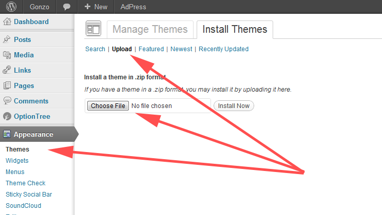Method 2: If the method above fails you will need to upload via FTP. I recommend you install Filezilla and upload just the "gonzo" folder into www.yourwebsite.com/wp-content/themes/ folder on your server. top
1.2 - Installing Dummy Content
Sign up to my support site and download the link from this FAQ. All you need to do then is to extract the ZIP file, go to Tools > Import and upload the XML file.
WARNING! If you already have content on your blog then use this file on a fresh wordpress installation. Otherwise you risk messing up your current blog. There's a ton of posts in that file. You've been warned :) top
1.3 - Customisations Tips (!important)
NB: Before you attempt any customisation please get familiar with one of the web inspectors. In the end you will save a huge amount of time. If you are on chrome it is already installed, simply right-click on the element you want to change and select "Inspect Element" or else press F12. If you are using Firefox you can install the Firebug addon.
When you open it you will see two panes. The markup is on the left with the css on the right. Once you target the element you want to change, you have access to all css right there in the browser. Once you change a css property you can see the results instantly.
Once you've figured out what elements you want to change, you can paste those changes into the "Custom CSS" box in the theme options. If you edit the actual css files then you might have some issues when you upgrade the theme. Keeping your css customisations in the theme options will keep them nice and safe.
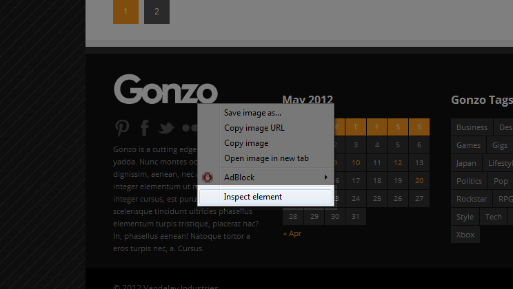 top1.4 - Adding Menus
To Add your menus you go to Appearances > Menus and you can create the menus there. There are three menu locations: Primary (main navigation), Mobile (the dropdown for mobile users) and Copyright Area (in the footer). To learn more about creating menus please refer to the WordPress Codex. To add a colour to the hover/active state of your menu item you simply paste in the hexidecimal value into the description field (enable descriptions at the top right of the screen via "Screen Options"). For example if you wanted red you would paste in FF0000 (do not include the '#' symbol).
top1.5 - Adding Your Logo
Go to Appearances > Theme Options and click the General tab. Click upload and navigate to the file on your hard disk (dimensions for the live preview logo are 254 X 96).
1.6 Setting Your Homepage
If you are using a page with a complex magazine layout you create the page, assign the template "Homepage" .Then go to Settings > Reading and set the frontpage to static. Select the page you just created from the dropdown. After that you can start adding the layout modules. Please read chapter 2.2 where I explain how to make a complex layout
If you are using a simple blogroll then select the style of blog you wantfrom the theme options (in the "General Tab").
topCustomising the Categories
2.1 - Introducing the Shortcodes
In this theme I have created some GUI shortcodes for ease of use. Once you click on one of them a popup will appear with the options for that type of shortcode. Note that these shortcodes are also available in the category editor. The shortcodes (in order from left to right) are: Columns, Buttons, Layout-Modules, Tabs, Alert-Boxes, Toggles, Video-Embed, Soundcloud-Embed.
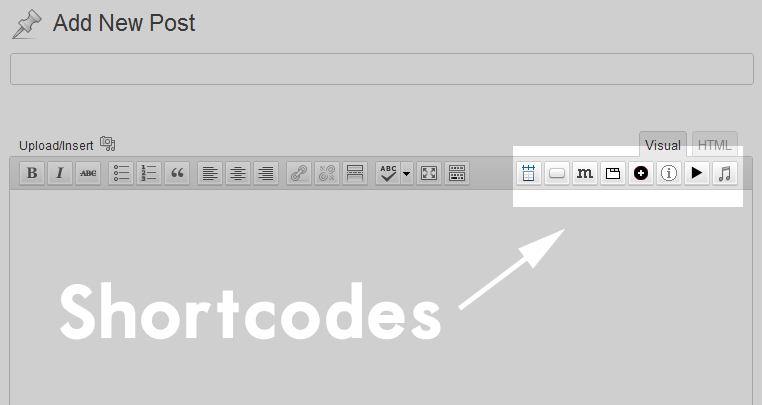 top2.2 - Creating a Complex Page/Category
Click the icon with the "m" on it. You now have the choice of 4 layout modules: Module A (half-width), Module B (full-width), Module C (quarter-width) & Module Gallery(three columns slider).
Once you select the module you want, insert the category slug. Normally this is a lowercase version of your category name with spaces replaced by dashes. For example: category name World News will have a slug of world-news. Add as many modules as you'd like and save the page.
Note that the gallery module will only pull in the posts that have the gallery post format. Also, if you want it to bring in all galleries (for the homepage) then use the category slug all.
top2.3 - Customising the Categories
You have quite a few options for customising the categories. You can use the different blogroll styles for a simple layout or use the modules outlined in the previous chapter to create complex layouts. All the options are in there when you edit the category.
NB: I should point out at this stage that any styling you make to a category will also affect its sub-categories. I did this for two reasons: one, it makes sense and two, it saves you the hassle of styling every sub-category. If you want to override the styles inherited in any sub-category then you can do so through the options in the category editor.
Category Sidebar: If you need a unique sidebar for this category then type in a word and you're done. Empty it and save to delete the sidebar.
Colour: This is the main colour. If you want to differentiate the categories visually then I think this is a great way to go.
Background: Add a background. Simply upload the file and save.
Background Position: If you don't want to worry too much about this option then try either "Tiled" or "jQuery Full Screen". Both will work fine for all screen sizes. If you want a centered static background then pick "Static".
Transparent Layer: If you're a creative sort then you might find this quite handy. It basically layers a static centered image over the background. An example of it's use might be: A background with a tiled wooden pattern and then a transparent layer of some paint splatters.
Disable Transparent Layer: You can disable the layer here.
Custom CSS: I put this in just in case you needed to quickly adjust the CSS for the category. Here's an example of where it could come in handy: Let's say you have a nice box shadow setup from the main theme options, and although it looks great on everything else, it looks bad on one of the categories. In this case you would edit the category in question and tweak the box shadow for just that category.
Enable Featured Slider?: Check the box if you want the slider to bring in featured posts from that category.
Category Layout Style:Pick from the presets or else enable the shortcodes for a complex layout.
Category wysiwyg Editor: If enabled from the previous option then you now have complete control over what appears in that category page.
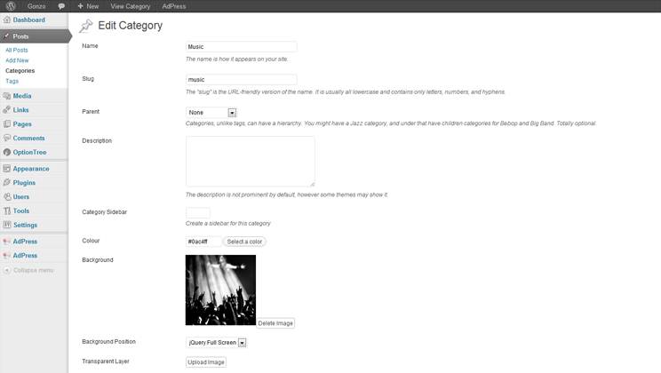 top2.4 - Adding Unique Colours to the Menu Items
Go to Appearances > Menus and add the category to the menu. Then quickly take a look at that category in the category editor. Copy the colour value you gave it and paste it into the description field of the menu item. Make sure that there is no '#' symbol. For example for red you would paste in "FF0000". Save the menu and you're done.
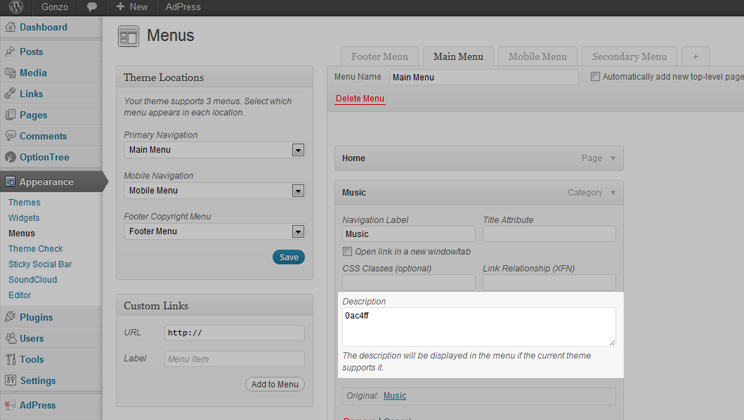 topThe Single Post
3.1 - Post Options
As you see there are quite a few options for your post. Don't worry, it's all very straight forward and I'll go through the first set here:
Featured Post?: If you want this post to be be pulled into the sliders then check the box
Create Sidebar: If you want this post to have a unique sidebar then type in a word or two. Empty the box to delete the sidebar.
Video Embed Code: If you assign this post as a video format then you'll need to paste in the video embed code here. Don't worry about iframe dimensions - it's all taken care of :)
Comment Type: Choose between Facebook comments or standard blog comments. I'll go into more detail in chapter 3.4.
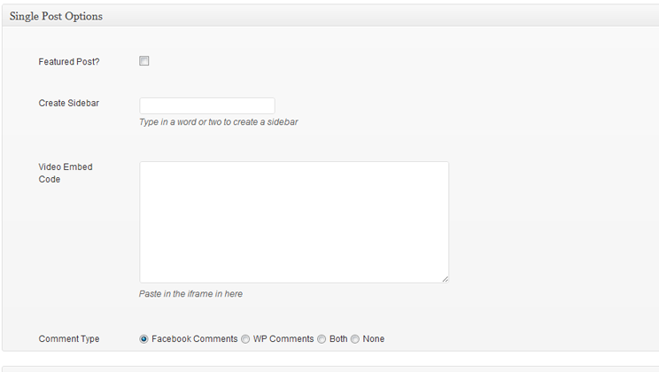 top3.2 - Post Formats
Here you can chose between Standard, Video, Gallery & Audio post formats.
Standard: The normal Wordpress post.
Video: If you chose this format please use the "Video Embed Code" post option and not the shortcode for the main video. It frees up the video shortcode to be used anywhere and not just at the top.
Gallery: Upload some media to the post. Then insert the gallery shortcode using the standard WP proceedure. The gallery is then converted into a nice slideshow. You can only have one gallery per page/post and it must be at the top of the page.
Audio: I've integrated the standard Soundcloud shortcode into post. Just click the soundcloud shortcode button and paste in your artist or track url
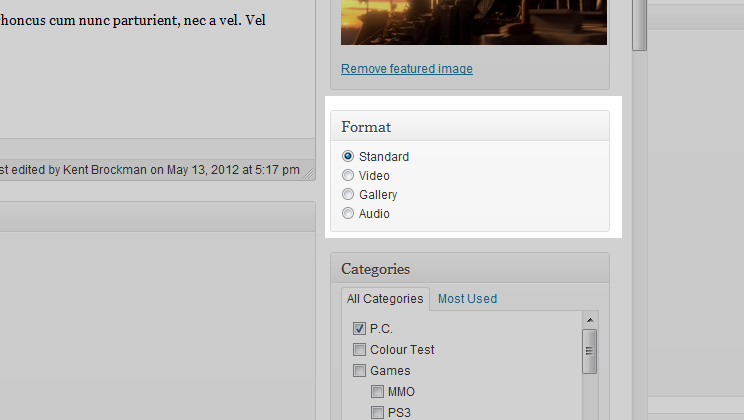 top3.3 - Reviews
The review options are as follows:
Enable Review?: Here you mark the post as a review so that the various loops in the theme will recognise it, look for a score and show the stars it was rated
Criteria: Here you can break down the various parts of the review e.g., Graphics, Value, Sound and so on. Give each one a description and a score(out of five). These criteria are optional and if you just want to give it a final score then so be it.
Rating Type: Here you set what the single post version of the review will looks like. Keep in mind that the final review score must always be between 0 and 5 to keep the database values consistent.
Final Score: If you use the different review crieria then this value is calcuated automatically for you in realtime. You can override it easily by putting in your own score. This value must always be between 0 and 5 to keep the database values consistent.
Criteria Header/Summaries/Display These last few options are used to control how the criteria headers and summaries appears on the post.
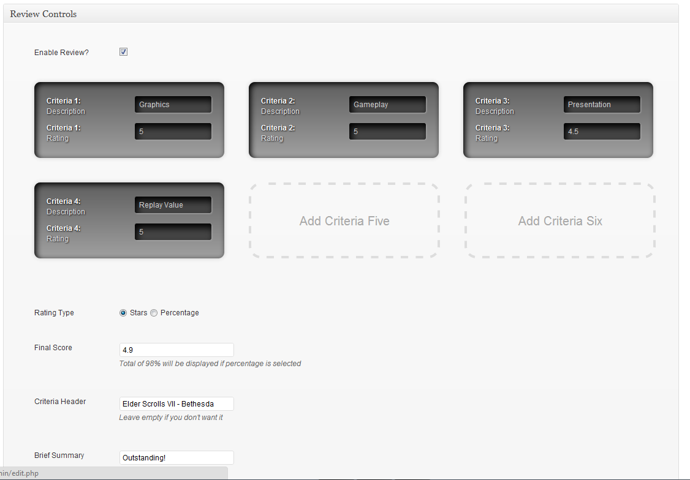 top3.4 - Comments
You have the choice of using standard Wordpress blog comments, Facebook comments or both. Use the radio button in the post options to select which one you want.
The advantage of using Facebook comments is that you will get more reach on social media networks. However, keep in mind that user anonymity is gone and that could stop people voicing their opinion if the subject matter elicits strong opinions or is controversial. There are plenty of well written articles on the web dealing with WP vs. FB comments so a little research may be in order to figure out what is most appropriate for your website.
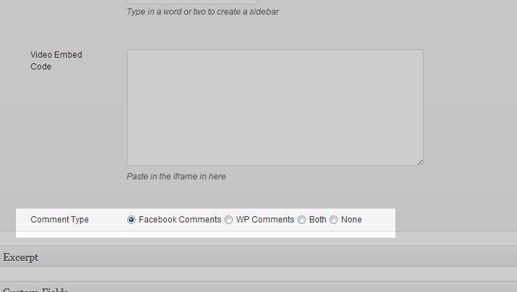 top3.4 - Author Box & Page
First you need to add a gravatar image. Go to http://www.gravatar.com and signup with the exact same email address in your wp user profile. Upload your photo or image and save it. This will then automatically appear in the author page (and in your comments around the web - pretty nifty eh?).
To get the biography to appear you need to simply fill out the "bio" box in your user profile page in the wp dashboard.
To get the social network icons to appear you need to put in your links into the relevant boxes.
topAppearances & Theme Options
4.1 - Theme Options Overview
To access the theme options go to Appearance > Theme Options. Here you will see a tabbed panel with various options.
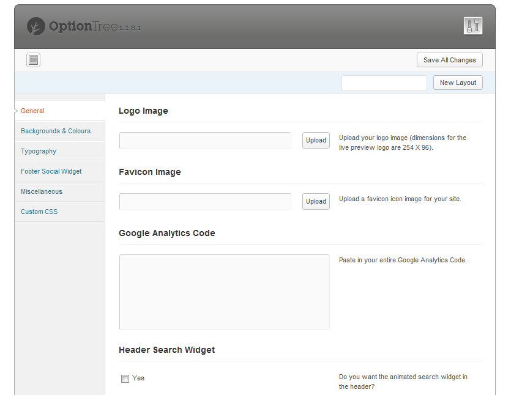N.B. If you are uploading images to the theme options please remember to click "file url" before inserting the image.
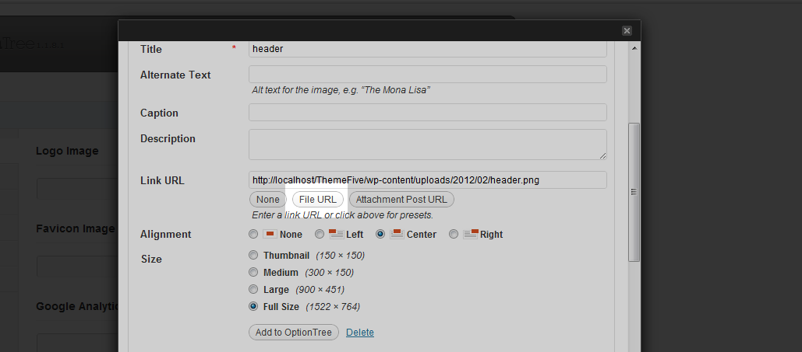 top4.2 - General Settings
Here you can configure the basic settings for your website such as logo, favicon and Google Analytics code. Note that you need to paste your entire analytics code into the textbox for it to work correctly.
top4.3 - Appearance
Here you have options to customise the general appearance of your website. These fallback settings are global and are overwritten by any category options that are set. You will notice a similarity between these global options and those in the category editor.
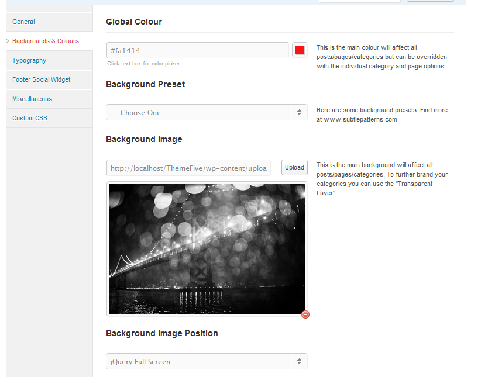Global Colour: Here you have a colour picker for the main colour for elements.
Background Preset: An assortment of preset backgrounds from www.subtlepatterns.com
Background Image: If you want a background image then upload it here.
Background Position: If you don't want to worry too much about this option then try either "Tiled" or "jQuery Full Screen". Both will work fine for all screen sizes. If you want a centered static background then pick "Static".
Transparent Layer : If you're a creative sort then you might find this quite handy. It basically layers a static centered image over the background. An example of it's use might be: A background with a tiled wooden pattern and then a transparent layer of some paint splatters.
Main Container Box Shadow : You can adjust the strength of the main container's box shadow here. It's a useful option for certain types of background.
top4.4 - Typography
I've taken the time to test dozens upon dozens of fonts from the Google Fonts collection and you can see my notes on what works in the list below.
There is also a base text size. What this does is it scales all the text - from the paragraph to the headers anchors etc. - everything is scaled in correct proportion. This is useful if a font seems a little small and you want to bump up the general size a little without having to customise the css files.
Opens Sans (excellent) @12px base starting scale
Lora (excellent) @12px
PT Sans (excellent) @12px
Cabin Condensed (very good) @13px
Philosopher (good) @13px
Istok Web (very good) @12px
Arimo (good - excellent for body copy) @12px
PT Serif (good) @13px
Arvo (could work if paired with a good sans) @12px
Gentium Basic (ok) @15px
Droid Serif (ok) @12px
Amaranth (pretty good, needs to be paired) @13px
Cuprum (ok) @14px
Signika (ok) @13px
PT Serif Caption (Good) @12px
Lato (goodish) @12px
Expletus Sans (good) @12px
Dosis (goodish) @14px
Signika Negative (good) @13px
4.5 - Footer Social Widget
Here you can setup the branded footer widget like you see on my live preview. It is quite straightforward. Just add an image and add the urls to your social networks. If you don't want to use it then you can disable it and use normal widgets in the "Footer Column One" widget area instead.
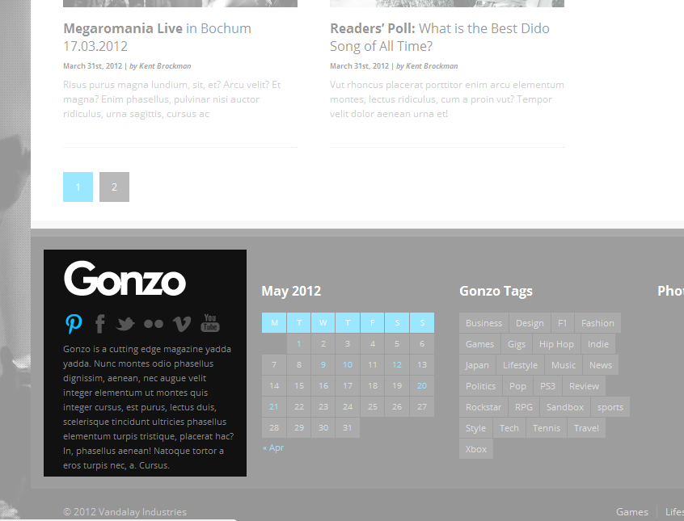 top4.6 - Custom CSS
Please paste in your custom css in here; you will avoid a lot of headaches when updating the theme.
topMiscellaneous
5.1 - Plugins
Here's a quick guide to get your plugins up and running:
Sticky Social bar(premium): This is the skyscraper social media area that appears in the single post. To install it - have a look in the "plugins" folder in your downloaded zip file. Upload the 'StickySocialBar' folder into your 'wwww.yourwebsite.com/wp-content/plugins/' folder on your server. Activate once uploaded. To configure it go to Settings > Sticky Social Bar.
Social Box(premium): This is the main social counter you can see in the top right of the live preview. To install it you'll need to check the 'plugins' folder in the zip you downloaded from Themeforest. Upload the .zip file from your wp dashboard (plugins > add new). To add it to your site just go to Appearance > Widgets and add it to your sidebar.
DP Flickr Widget: This displays a simple Flickr feed.
Gallery to Slideshow This converts the gallery from the WP standard gallery to a responsive slideshow. To insery it into a post you add some images to the posts gallery and then insert the [gallery] shortcode.
Soundcloud: To add a soundcloud player to your post/page/category you click the Soundcloud shortcode button.
Tabber Tabs Widget: To add this you need to first add widgets to the tabber tabs widget area and then add the tabber tabs widget to your sidebar. It sounds more complicated than it is. You'll see what I mean when you go to Appearance > Widgets.
Wordpress Popular Posts: The best popular posts widget I could find. To install it - have a look in the "plugins" folder in your downloaded zip file. Upload the 'wordpress-popular-posts' folder into your 'wwww.yourwebsite.com/wp-content/plugins/' folder on your server. Activate once uploaded. After that widget will appear in the "Widgets" page. To get it looking like my live preview input the settings in the image below.
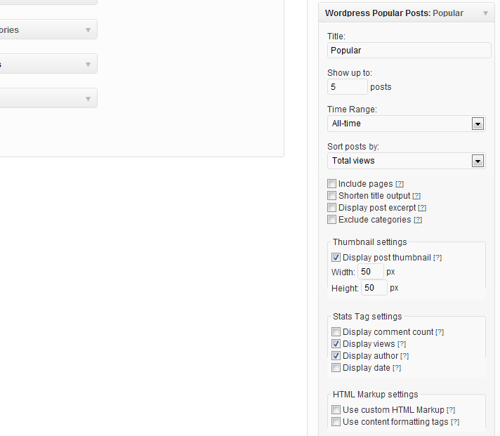 top5.2 - Advertising
For the responsive advertising slots in the live preview I have used the Adpress plugin from CodeCanyon. Adpress and Gonzo are compatible however I have not tested any other advertising plugins. The main reason being that responsive design is relatively new and most advertising networks and plugins are still developing a solution to serving ads for different devices, pixel ratios not to mention flash. So I decided to pick one good plugin and make the theme compatible with it so that you have one decent way to advertise right off the bat.
If you see another quality advertising plugin that could work with the theme - let me know and I'll consider making it compatible with the responsive layout.
top5.3 - Shortcodes
In this theme I have created some GUI shortcodes for ease of use. Once you click on one of them a popup will appear with the options for that type of shortcode. Note that these shortcodes are also available in the category editor. The shortcodes (in order from left to right) are: Columns, Buttons, Layout-Modules, Tabs, Alert-Boxes, Toggles, Video-Embed, Soundcloud-Embed.
top5.4 - Attribution
For a full list of all images using in the live preview and all code used in the theme please go CLICK HERE.
5.5 - Bonus Features
As of version 1.5 there has been a best reviews page template added. To use it you need to create a page and apply the "Best Reviews Page" template to it. Then fill out the relevant page options underneath the main editor.
Also added in v1.5 is a best reviews widget. Just drop it into your sidebar and fill out the category-slug and number of reviews.